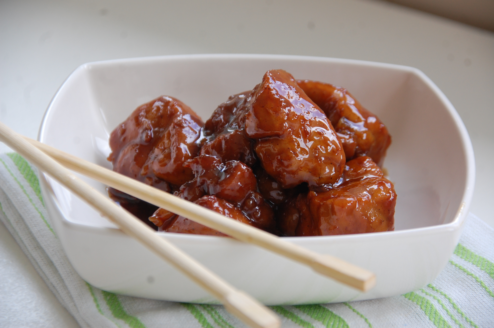

Les delices de Manou
Bientôt dans vos assiettes !
Navigation rapide
Porc au caramel
Ingredient pour 1 personnes
190 g de porc emincé
0.25 cuillére à café de sauce soja
0.25 cuillère à café de gimgembre
0.25 cuillère à café de caramel
1.5 cube de bouillon de poule